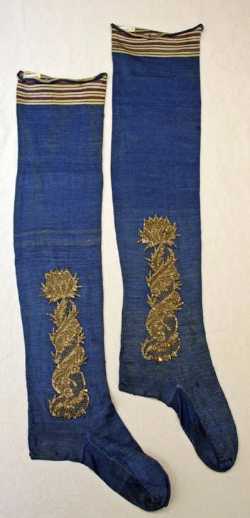

Одна вещь из архива
Золото на синем шёлке
Узкие полосы у самого края, затем большое синее поле. Орнамент появляется ниже, у щиколотки. У этой французской пары конца XVIII века есть деталь, которую легко пропустить, если смотреть только на силуэт.
Рассмотреть детали ↓
Два орнамента видны рядом. На синем фоне можно сравнить их силуэт и расположение.
Карточка предмета
- Предмет
- Пара чулок
- Происхождение
- Франция
- Датировка музея
- Конец XVIII века
- Материалы
- Шёлк и металлическая нить
- Собрание
- Институт костюма, Метрополитен-музей, Нью-Йорк
- Инвентарный номер
- C.I.55.52.1a, b
Куда уходит узор
Начните с верхнего края. Его узкие поперечные полосы дают глазу ориентир, а ниже тянется однотонный шёлк. В нижней части рисунок меняет направление. Он поднимается вдоль ноги, постепенно расширяется и завершается веером. Эта маленькая перемена масштаба хорошо видна на втором чулке.
Что именно блестит? В карточке Института костюма указаны шёлк и металлическая нить. По одному золотистому оттенку нельзя определить состав металла. Зато снимок позволяет рассмотреть решение мастера — как немного блеска на гладком синем поле меняет весь рисунок.
В музей пара поступила в 1955 году как дар Анри-Марселя Каджена (Henri-Marcel Cadgene). В каталоге она датирована концом XVIII века. Инвентарный номер связывает обе части и позволяет вернуться именно к этой паре среди других французских чулок собрания.